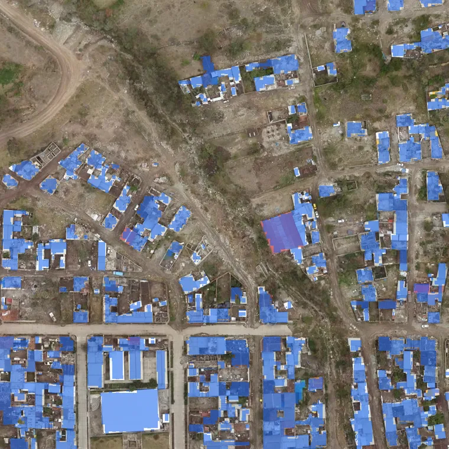
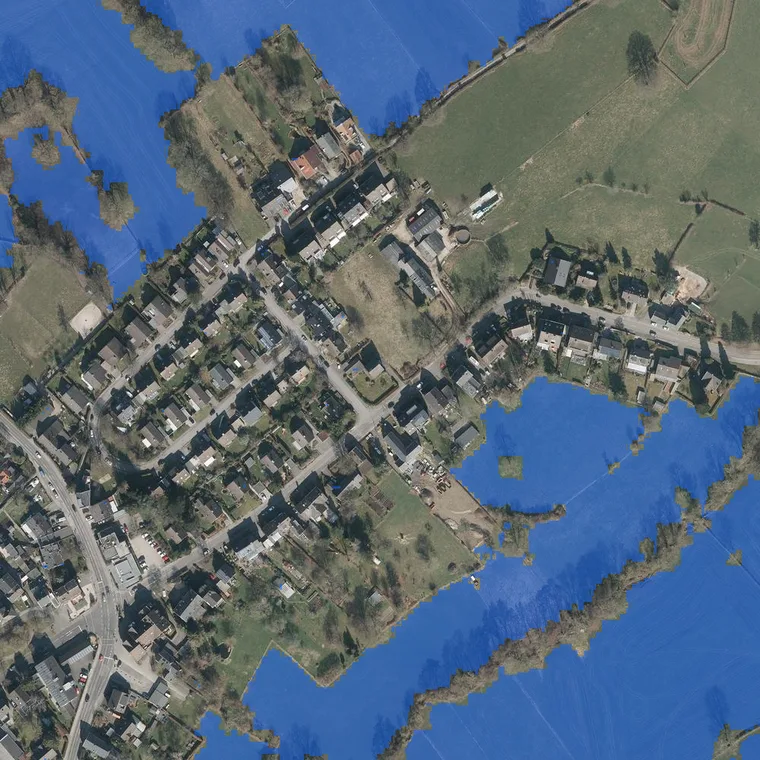
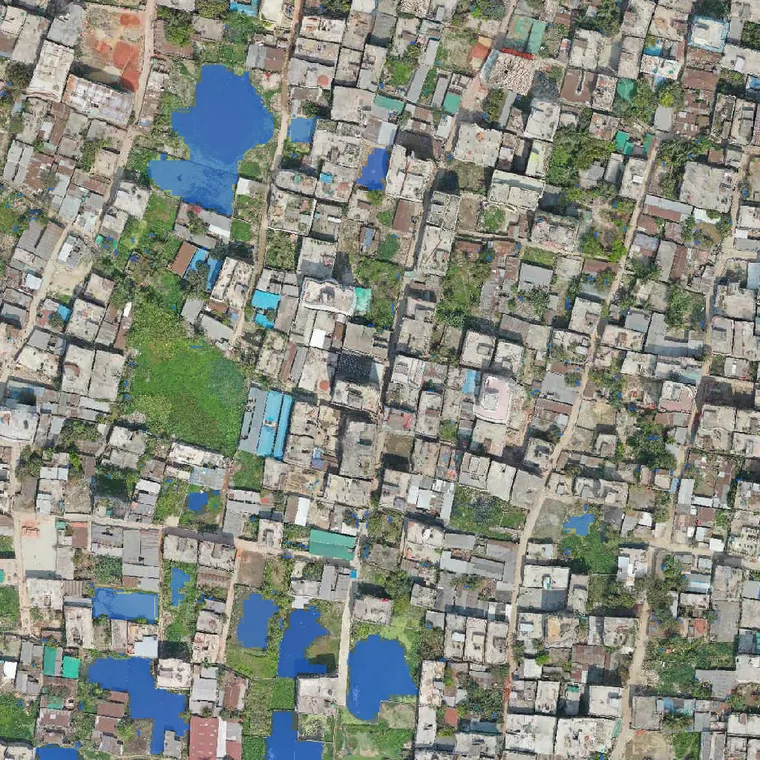
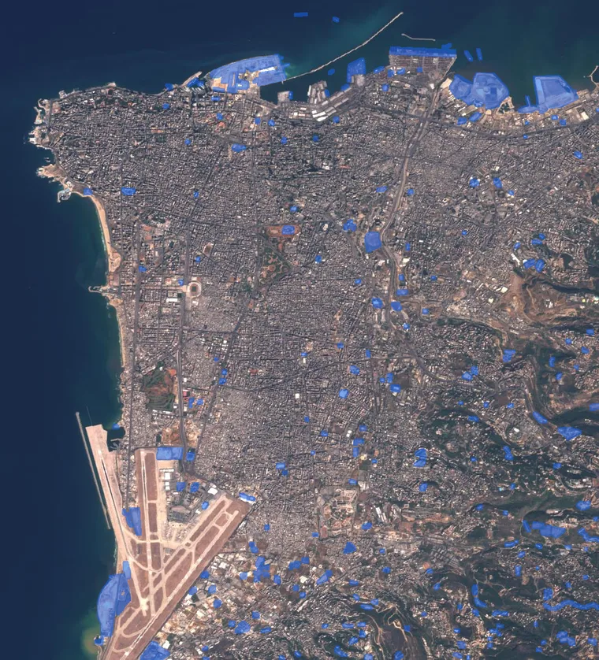
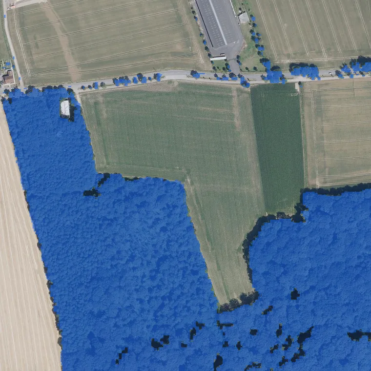

What is on this land?
It draws the map from the pixels up. Every rooftop, road, field, and pond, labeled and measured, ready to check against a permit or a claim.
Runs onopticalradarelevation

Point Locamage at imagery from any satellite, plane, drone, or street camera and ask in the words you already use. It reads the scene and answers.
Readsopticalradarhyperspectralelevation
Five jobs cover most of it. They all run on the same model, whatever sensor took the picture.
It draws the map from the pixels up. Every rooftop, road, field, and pond, labeled and measured, ready to check against a permit or a claim.

It reads every field the way an agronomist would, all of them at once, week after week. Stress and patchy growth get flagged while there is still time to act.

Describe what you are hunting for. Solar panels, new construction, ponds, bare ground. It checks every acre in the region and marks the hits.

Give it two passes over the same ground and it outlines what actually moved. Clouds and shifting light get ignored, so the difference you see is real.

Some questions end in a number. Planted acres, standing timber, water surface, new pavement. It measures from orbit and shows where the number came from.

Security teams watch places nobody can drive to. Insurers price a storm before the adjusters land. Growers catch stress while it is still cheap to fix. Climate researchers keep a running record of forests, coasts, and wetlands.
Somewhere in orbit there is a picture of your problem.
Ask it what happened.
Most Earth AI is built for one satellite and falls apart on the next. Locamage was built the other way.
It learned from years of imagery covering the whole planet, every kind we could find. New sensors work the day they come online. And the archive you already pay to store is full of answers.
Tell us what imagery you have and what you need to know from it. You will get a straight answer about whether Locamage fits.